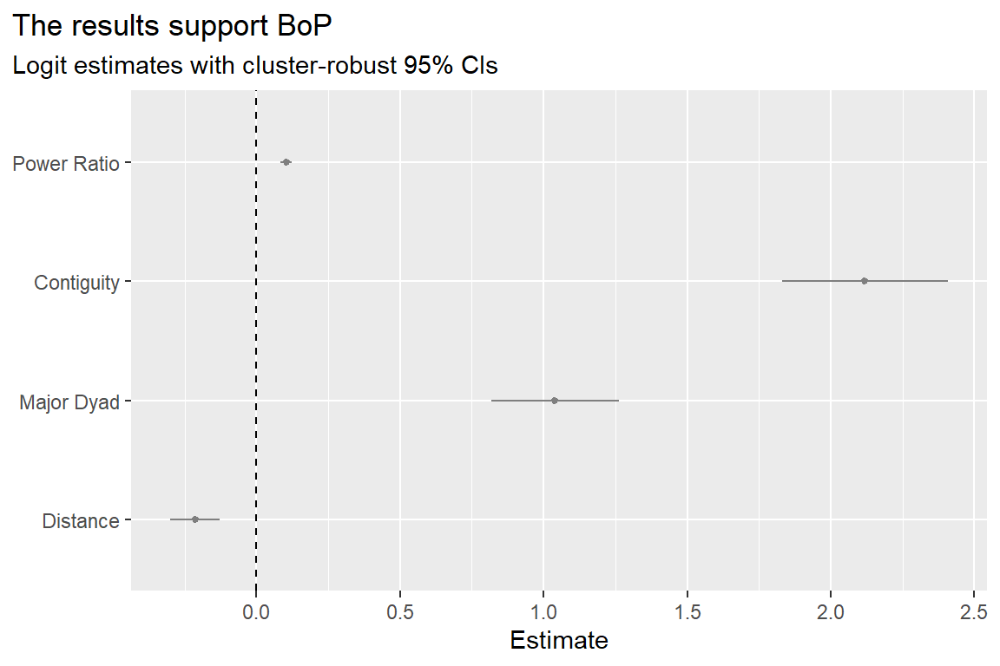
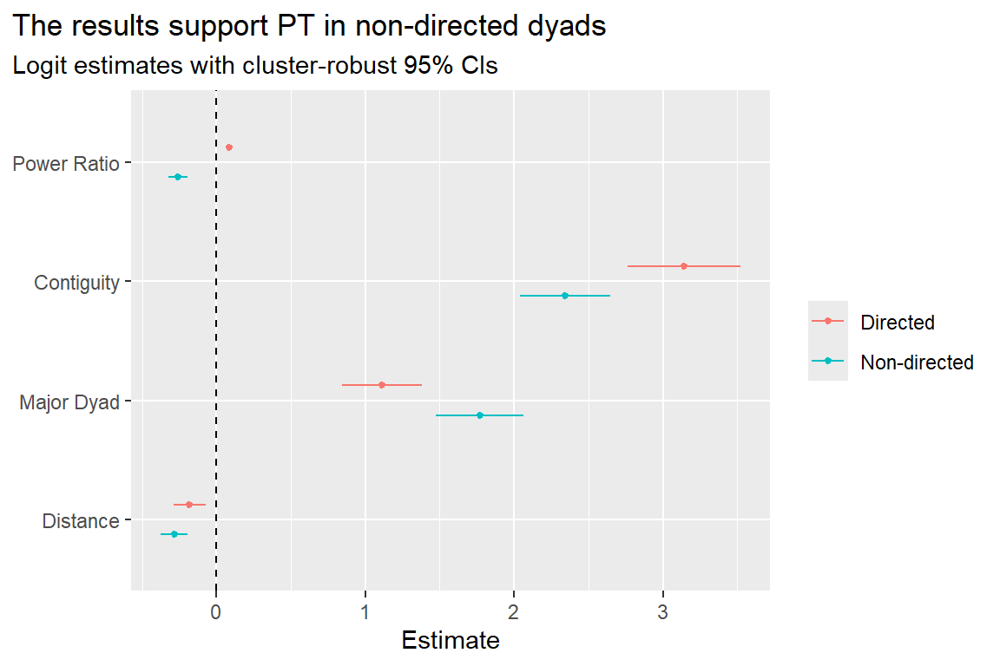
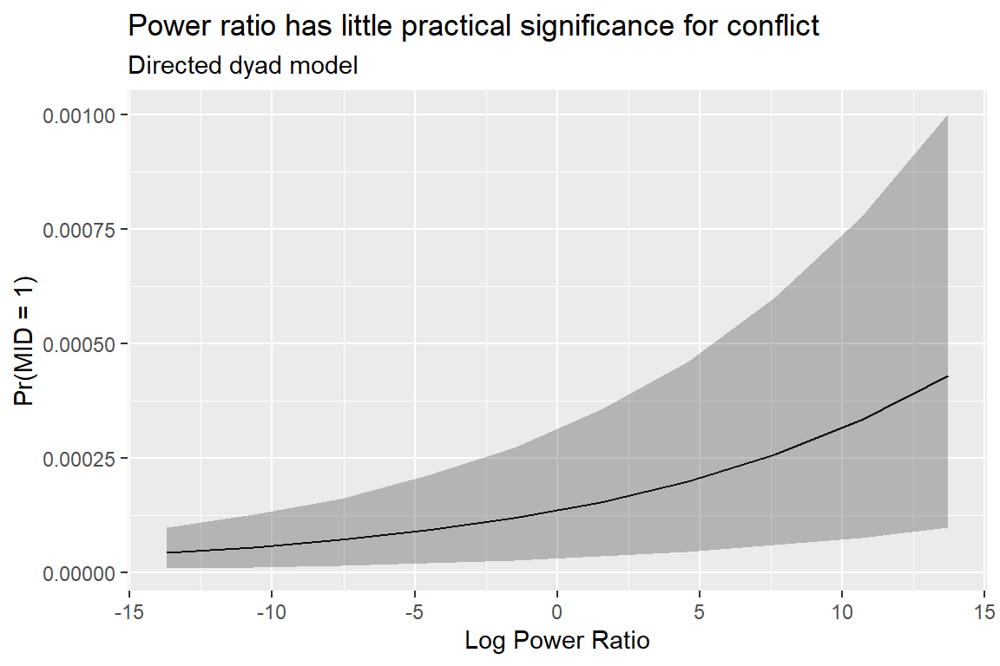
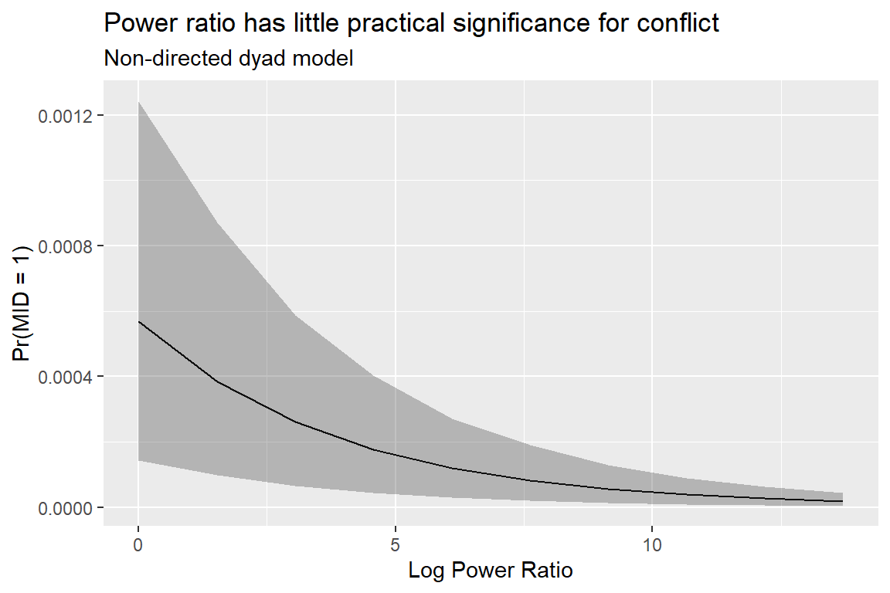

library(tidyverse)
library(peacesciencer)
source(
"https://raw.githubusercontent.com/milesdwilliams15/death-destruction-data/refs/heads/main/helpers/peacesciencer_extras.R"
)6 The Balance of Power and War
Main ideas:
Balance of Power vs. Power Transition: Power as a cause of war has been long-debated by conflict scholars, and two different theoretical approaches, BoP and PT, hypothesize very different relationships between power and the chance of war.
What is power? Power is usually measured in material terms. The most commonly used measure is called the Composite Indicator of National Capability or CINC.
CINC and War: Using CINC to measure the distribution of power between countries, a dyadic conflict analysis offers contradictory results depending on whether you use a directed or non-directed dataset.
6.1 What is power?
Long ago, the famed political scientist Robert Dahl (1957) defined power as the ability of A to get B to do what B otherwise would not. While Dahl’s understanding of power remains debated to this day, one thing is clear from his definition: power is relational. It doesn’t exist in a vacuum.
Another thing is also clear: power’s influence is hard to measure. By Dahl’s definition, to identify the effects of power you need to observe what B would have done absent the intervention of A. In international relations, where A and B are countries, this is almost impossible.
Hans Morgenthau (1978), and important international relations scholar and theorist, took a more pragmatic approach to conceptualizing power. He identified nine components of national power: geography, resources, industrial capacity, military preparedness, population, national character, national morale, quality of diplomacy, and quality of governance.
A strength of this way of conceptualizing power over Dahl’s is that it provides researchers with many tangible metrics. Today, most conflict scholars measure power in terms more akin to Morgenthau than Dahl. The most commonly used measure is the Correlates of War (COW) Composite Indicator of National Capability (CINC) (D. J. Singer 1987; J. D. Singer, Bremer, and Stuckey 1972). A quick glance at Google Scholar for the search term “CINC score” returns 1,200 search hits between 2000 and 2025. It’s hard to find a conflict study that doesn’t use this measure.
CINC scores are composed of six different metrics, each intended to capture a distinct dimension of national power:
Military expenditures
Military personnel
Iron and steel production (in tons)
Primary energy consumption (in coal-ton equivalents)
Total population
Urban population
CINC is calculated as a country’s world share of the six component measures above. It can take values anywhere from 0 to 1. A 1 would mean that a country is 100% responsible for all six of the above metrics; a 0 would mean that a country is responsible for 0%.
Other measures of power exist as well, all of which focus on observable metrics like CINC, but which are used much less widely. In the early years of peace science research, prior to the development of CINC, some scholars used gross domestic product (GDP) to measure power because it captures the capacity to build up military forces. More recently, Anders, Fariss, and Markowitz (2020) proposed a concept they call surplus domestic product, which is a country’s GDP minus minimum expenditures required to keep a population alive at the bare minimum level of subsistence. The idea behind this measure is to quantify resources available to a country after meeting basic needs, or as they put it, spending on “bread before guns or butter.”
Carroll and Kenkel (2019) offer yet another approach to quantifying power using machine learning and predictive modeling. Using an “ensemble” learner, they use each of the individual components used to construct CINC as separate predictors of military victory in dyadic conflicts. Their measure of power is equivalent to the probability that, if country A and B fight, A wins.
Other new measures are coming out on a regular basis, and I suspect even more will emerge over the coming years (especially as more researchers leverage AI to come up with fixes for older approaches).
Having looked at and compared many these measures myself, I can say one thing definitively: These measures aren’t identical, but they are all strongly correlated with each other. Practically speaking, this means using one measure over the others is unlikely to make a massive difference in your research. But, you should still use these measures wisely and transparently. If your statistical findings change dramatically based on the measure you use, it’s unwise (and dishonest) to hide this fact from your readers.
In the analysis that follows, I’ll use CINC since this is the most commonly used. But don’t assume that it’s the only correct measure of power.
Ultimately, when it comes to defining and measuring power, conflict scholars have adopted a purely empirical approach, focusing on observable metrics of economic size or realized military might. They tend to ignore harder to quantify metrics like national morale or successful diplomacy and soft power (the ability to persuade). For this reason, it’s helpful to think of all of the measures of power I just identified as proxies for power. They aren’t power itself, but they are correlated with it (at least, most conflict scholars think so).
6.2 Why measure power?
What’s the point of trying to measure power? The simple answer is that different theoretical arguments exist about power and war. I can’t possibly cover all the competing arguments here, so I’ll focus on two of the most prominent.
The first argument is rooted in the international relations school of thought known as Realism. For realists, the defining characteristic of international relations is a state of anarchy, or the absence of a world government to enforce laws. In such a world, countries must adopt self-help strategies to survive, which includes amassing military forces for self-defense or, even, offense. Many realist theories argue that creating a balance of power (BoP) is required to ensure peace. If one country has a preponderance of power, no others can serve as a check on its ability to impose its will on other countries, which inevitably leads to conflict and war. Power parity, therefore, is predicted to lead to a greater chance of peace.
BoP’s chief competitor is power transition (PT) theory, which views international relations has hierarchical rather than anarchic. This view holds that the balance of power isn’t as important for explaining patterns in conflict as changes in the balance of power. PT holds that rising powers are likely to be more aggressive in their foreign policies and, thus, more prone to be a source of conflict and war in the international system. Part of what contributes to their aggression is the presence of a hegemon, a country that possesses a preponderance of power that acts as the hierarch of the international system. Rising challengers, in the PT view, challenge the hegemonic power which has largely succeeded in shaping the international system in favor of its own interests. The rising power, dissatisfied with the status quo, seeks to change the international system in ways that better align with its own preferences, and this could lead to war.
BoP and PT have many sub-variants, but at their core, they consistently adopt opposing understandings of the role of power in international conflict. BoP predicts that parity promotes peace. PT predicts that parity promotes war. BoP further predicts that stronger states are more conflictual, while PT predicts weaker, rising powers are more conflictual.
More than an academic issue, identifying which of these frameworks is the best has important policy implications for world leaders. The obvious policy prescription with BoP is for countries to pursue parity in their military capabilities. For any one country, this might look like maintaining parity (or near parity) with your peers and taking steps to prevent any other country from amassing too much military might. PT prescribes different policies, such as maintaining a preponderance of power and offering proportionate concessions to rising powers to minimize their dissatisfaction as they grow in strength.
The stakes are quite high, because the policies one approach prescribes, the other proscribes. Operating as if one approach is true when the other actually has better explanatory power could be disastrous.
6.3 Testing BoP and PT
Let’s go to the empirical record and see what the data says. Do countries with more power than others start fights more often, as BoP predicts, or do countries with less power tend to start fights more often, as PT predicts?
I want to walk you through a quick example (with R code) of a simple analysis that tests the competing predictions of BoP and PT head-to-head. While there are a wide variety of approaches to testing these theories, and arguable counter points to the approach I’ll take here, I think you’ll see that even my simple approach helps to explain an ongoing tension in the BoP-PT debate: a simple change to my research design yields contradictory findings.
I’ll start with gathering some data. I’ll use {peacesciencer} to get started, which is the package I introduced in the previous chapter. I’ll also use tools from the {tidyverse} and some extra helper functions I’ve created to make analyzing data made with {peacesciencer} less of a headache, and for bringing in the MIE-based measures of conflict initiation rather than using the COW MID dataset. Here’s the code you need to run to get started:
The first thing I need to do is make a dataset. When it comes to doing peace science research, remember that most studies use dyadic data, but I have to make a choice. Should the data be directed or non-directed?
The below code will make a directed-dyad-year dataset. Remember that a directed dataset helps answer questions about which of two countries is most likely to initiate a fight with the other. This is a natural choice for testing competing claims from BoP and PT, because these theories make claims about which country is more likely to be aggressive based on its power relative to other countries. BoP says more powerful countries will start more fights, while PT says weaker countries pose a more serious threat. To test this, I need to model the direction of conflictual behavior. Hence, I need a directed-dyad-year dataset.
The below code will produce one that has all the variables I need. I start by using create_dyadyears() to make a directed-dyad-year dataset from 1816 to 2014. I then pipe in some conflict data using add_icd_mics(), which provides information at the dyad-level about militarized interstate confrontations (MICs) as summarized in the MIE dataset (Gibler and Miller 2024), which I used in previous chapters. This function provides information not just about whether a MIC began or is ongoing between a pair of countries, but also information about which country initiated the conflict and a count of peace years (or peace “spells”) for each country pair, which I need to control for in my analysis. I then bring in data from the COW National Material Capabilities dataset, which provides CINC scores for all countries in the COW state system over time (D. J. Singer 1987; J. D. Singer, Bremer, and Stuckey 1972). As noted above, these are a 0-1 scale of a country’s global share of material capabilities in a given year. Finally, I bring in data to control for opportunities countries have to fight: contiguity, major power status, and bilateral distance.
## create a directed-dyad-year dataset
create_dyadyears(
subset_years = 1816:2014
) |>
## add dyadic MIC dataset
add_icd_mics() |>
## add CINC scores
add_nmc() |>
## add contiguity, major power, and distance controls
add_contiguity() |>
add_cow_majors() |>
add_cap_dist() -> dtNow that I have the data, I just need to implement a few recodes. First, I need to calculate the dyadic power ratio by dividing country 1’s CINC score by country 2’s. This is a common measure in conflict research used to account for the balance of power between a pair of countries. It’s somewhat ambiguous, however, whether this should be the raw ratio, or if it’s better to take the log. I prefer the latter, so this is what I’ve done in my code below. I also included recodes to clean up my control variables for opportunities for war and made my dyadic identifier, which I need for calculating clustered standard errors. (Note that the code to make the dyadic identifier is a bit different. Because dyads appear twice per year, I need to account for this.)
## some recodes
dt |>
mutate(
ratio = log(cinc1 / cinc2),
cont = ifelse(conttype > 0, 1, 0),
major = pmax(cowmaj1, cowmaj2, na.rm = T),
ldist = log(capdist),
dyad = 1000 * pmin(ccode1, ccode2) + pmax(ccode1, ccode2)
) -> dtNow that I have everything finalized, I can analyze the data. The below code will estimate a logit model of MIC onset initiation by country 1 in each directed-dyad-year pair as a function of the log of the power ratio, contiguity, whether one of the countries is a major power, and the log of bilateral distance. It also includes a cubic peace years trend. Note that the function I’m using is glm_robust() rather than glm() which I used in the last chapter. This is a function that I’ve added to my helper functions. It’s a wrapper for glm() that automatically specifies that it should estimate a logit model, and it reports robust standard errors, which can be clustered based on whatever variable you specify with the clusters option. The output is saved as an object called fit1, which is a tidy data frame of model estimates and summary statistics (an ideal format for plotting).
## estimate logit model with cluster-robust 95% cis
glm_robust(
miconset_init1 ~ ratio + cont + major + ldist +
micspell + I(micspell^2) + I(micspell^3),
data = dt,
clusters = "dyad"
) -> fit1
## report the output
fit1# A tibble: 8 × 7
term estimate std.error statistic p.value lower upper
* <chr> <dbl> <dbl> <dbl> <dbl> <dbl> <dbl>
1 (Intercept) -5.22 0.493 -10.6 3.32e-26 -6.19 -4.26
2 ratio 0.0843 0.00832 10.1 3.67e-24 0.0680 0.101
3 cont 3.14 0.194 16.2 4.42e-59 2.76 3.52
4 major 1.11 0.138 8.06 7.39e-16 0.841 1.38
5 ldist -0.183 0.0552 -3.31 9.26e- 4 -0.291 -0.0747
6 micspell -0.151 0.0109 -13.8 1.48e-43 -0.172 -0.129
7 I(micspell^2) 0.00232 0.000320 7.25 4.23e-13 0.00169 0.00294
8 I(micspell^3) -0.0000101 0.00000215 -4.67 2.99e- 6 -0.0000143 -0.00000584The results are easier to see in a coefficient plot. I added a function called coef_plot() to my helper functions file that takes the output from glm_robust() and runs ggplot code under the hood to produce a decent looking coefficient plot so I don’t have to write a bunch of extra code to get the same result.
## coef plot of results
fit1 |>
slice(2:5) |>
coef_plot(
coef_map = c(
"Power Ratio",
"Contiguity",
"Major Dyad",
"Distance"
)
) +
labs(
title = "The results support BoP",
subtitle = "Logit estimates with cluster-robust 95% CIs"
) 
As you can see, the results support BoP rather than PT. According to the model estimates, after controlling for opportunities to fight and peace years, the greater country 1’s power relative to country 2’s, the more likely 1 is to initiate a conflict with 2.
Before jumping to any hasty conclusions, let me show you how a subtle change to the data yields a very different finding. One factor that probably too few peace scientists pay attention to is the conceptual importance of directed versus non-directed datasets. Say I didn’t care about modeling the direction of aggression between countries and instead did a non-directed dyad analysis. The below code will make the necessary changes to the data, re-estimate the regression model, and report the results, this time comparing them to those shown above in the same coefficient plot. Do you see what’s changed?
## make the data non-directed
dt |>
filter(ccode1 < ccode2) |>
mutate(
ratio = log(pmax(cinc2 / cinc1, cinc1 / cinc2, na.rm = T))
) -> ndt
## estimate logit model
glm_robust(
miconset ~ ratio + cont + major + ldist +
micspell + I(micspell^2) + I(micspell^3),
data = ndt,
clusters = "dyad"
) -> fit2
## summarize results and compare
bind_rows(
fit1 |> slice(2:5) |> mutate(model = "Directed"),
fit2 |> slice(2:5) |> mutate(model = "Non-directed")
) |>
coef_plot(
coef_map = c(
"Power Ratio",
"Contiguity",
"Major Dyad",
"Distance"
)
) +
labs(
title = "The results support PT in non-directed dyads",
subtitle = "Logit estimates with cluster-robust 95% CIs"
) 
Amazingly, in a non-directed dyad analysis, the data supports PT rather than BoP. Country pairs where there’s a bigger imbalance of power are less likely to fight. What’s going on here?
I have to confess that I don’t really know, but this slight, seemingly innocuous tweak that gave me statistically significant results that contradict the first set of findings, should raise alarm bells. And this is the point I wanted to make: it’s possible to analyze the data in such a way that supports either theory.
This is the most important challenge associated with peace science (and social science generally), and it demonstrates why you shouldn’t just start cobbling together a grab-bag of variables and running analyses without first thinking very carefully about the choices you’re making and why. I think this point is even more important now in an age of pattern-engine-driven workflows, where AI agents can easily make subtle choices, against your wishes, or on their own without your input, that dramatically affect results. For this reason, even if down the road a tool like Claude ends up writing and running 99% of your code, you still need to understand what it’s doing, and you need to be in the driver’s seat. Control the tool; don’t let it control you.
If all you remember from this exercise is that subtle choices make big differences, that will be enough for me.
And one more thing before I wrap up. In addition to the results appearing contradictory, they also have little practical significance. The below code will produce a prediction plot based on the model fit with the directed dyad dataset, and the results appear below. The predicted change in the probability of side 1 in a country pair initiating a conflict with side 2 is negligible.
tibble(
ratio = seq(min(dt$ratio), max(dt$ratio), len = 10),
cont = mean(dt$cont),
major = mean(dt$major),
ldist = mean(dt$ldist),
micspell = mean(dt$micspell)
) -> ndata
sim_pred(fit1, ndata) |>
group_by(ratio) |>
summarize(
pred = mean(p),
lower = quantile(p, .08),
upper = quantile(p, .92)
) |>
ggplot() +
aes(ratio, pred, ymin = lower, ymax = upper) +
geom_line() +
geom_ribbon(alpha = .3) +
labs(
title = "Power ratio has little practical significance for conflict",
subtitle = "Directed dyad model",
x = "Log Power Ratio",
y = "Pr(MID = 1)"
)
The same is true for the non-directed model. The below code produces another prediction plot like the first, but this time for the model fit with the non-directed dyad data. Again, you can see that the balance of power predicts a negligible difference in the chance of conflict between a pair of countries. What this tells me is that BoP and PT, if they are useful theories, have limited utility in explaining most of the variation in international conflict.
tibble(
ratio = seq(min(ndt$ratio), max(ndt$ratio), len = 10),
cont = mean(ndt$cont),
major = mean(ndt$major),
ldist = mean(ndt$ldist),
micspell = mean(ndt$micspell)
) -> ndata
sim_pred(fit2, ndata) |>
group_by(ratio) |>
summarize(
pred = mean(p),
lower = quantile(p, .08),
upper = quantile(p, .92)
) |>
ggplot() +
aes(ratio, pred, ymin = lower, ymax = upper) +
geom_line() +
geom_ribbon(alpha = .3) +
labs(
title = "Power ratio has little practical significance for conflict",
subtitle = "Non-directed dyad model",
x = "Log Power Ratio",
y = "Pr(MID = 1)"
)
6.4 Summary
Social science research involves tough judgment calls and subjective choices where there isn’t one correct option. This becomes an issue when your findings depend on your choices. Ideally, you want to see findings that aren’t so brittle. When it comes to BoP and PT, unfortunately, the results are brittle indeed.
This doesn’t mean all is lost. As a social scientist, seeing contradictory findings is an invitation to solve a puzzle. The question you should ask about BoP and PT is: why are the results contradictory? A good follow up would be: is something else going on?
These are the kinds of questions that can become the basis for new research. Maybe you’re the one to start looking for answers.